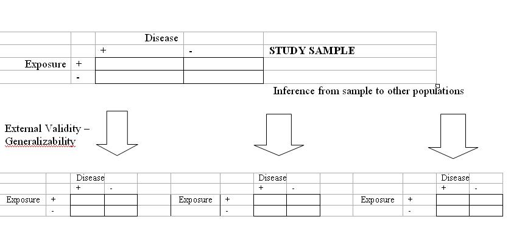

External Validity or Generalizability
Lead Author(s): Jeff Martin, MD
What is External Validity or Generalizability?
External validity is a measure of how well our study population reflects other populations. Can we generalize our study results to other populations? 
External validity - also called generalizability- asks the question: "Do the results obtained from the actual study subjects pertain to persons outside of the source population"?